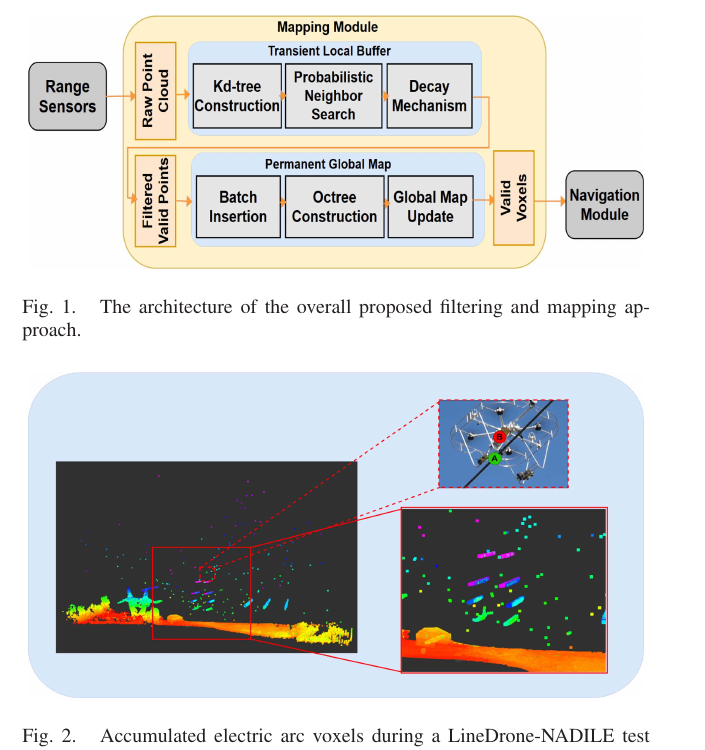
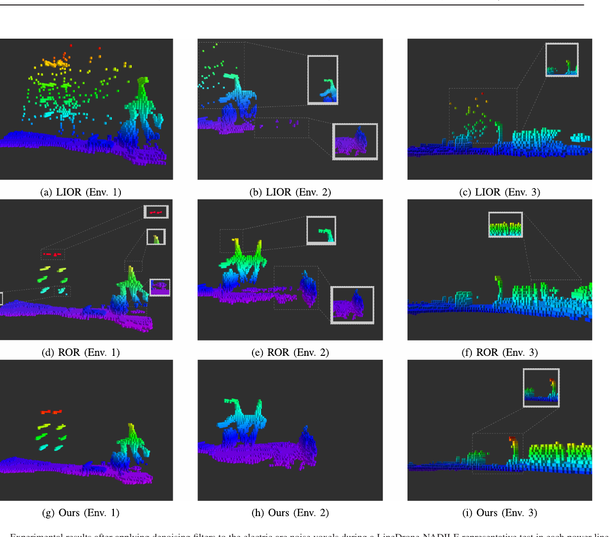

Robotics Research Reader · Stage 1
Multi-Structure Mapping for Filtering Electric Arc Noise in Power Line Environments
材料覆盖范围：完整阅读当前 PDF 的摘要、正文、图表、实验、限制与结论，并视觉核对本页嵌入的关键原图与表格裁剪。原文件为
离线交付说明：本报告采用 HTML + 同目录
Multi-Structure Mapping for Filtering Electric Arc Noise in Power Line Environments.pdf。本页严格限于 Stage 1：只还原论文故事线，不读取代码，不用第三方解读补写。离线交付说明：本报告采用 HTML + 同目录
images/ 的相对路径打包；移动或保存时需保留两者的相对目录结构。页面不依赖外部脚本、CDN 或远程字体。一、论文一句话在做什么
概括论文面向带电输电线无人机巡检中的短时电弧伪回波，以短时 k-d tree 缓冲区进行概率邻域过滤，再把保留点批量写入全局 OctoMap，从而阻止瞬态噪声累积成静态障碍。 （Abstract；Sec. I；Secs. III–IV；Fig. 1；PDF pp. 1–4）
二、Research Problem
具体问题：电弧散射产生的 LiDAR 伪点在地图中累积。 （Abstract；Sec. I 第 1 段；Sec. III-A；PDF pp. 1, 3）
场景：LineDrone-NADILE 无人机接近 315 kV 输电线并落线巡检。 （Abstract；Sec. I 第 1 段；Sec. III-A；PDF pp. 1, 3）
重要性：规划器依赖全局占据地图。 （Abstract；Sec. I 第 1 段；Sec. III-A；PDF pp. 1, 3）
后果：电弧体素被当作静态障碍，导致路径规划不收敛。 （Abstract；Sec. I 第 1 段；Sec. III-A；PDF pp. 1, 3）
三、Existing Methods & Gap
| 方法类别 | 原本怎么解决 | 作者指出的不足及影响 |
|---|---|---|
| 多传感器融合 | 用相机/雷达补充 LiDAR | 细、低反射导线及电弧的跨模态一致性尚未充分验证。 （Sec. II-A；PDF p. 2） |
| LIOR | 以低强度筛除天气噪声 | 电弧强度不可预测，因此强度阈值不适用。 （Sec. II-B；PDF p. 2） |
| ROR/SOR | 逐帧按空间密度去离群点 | 大点云搜索成本高，瞬态噪声与不完整邻域使单帧判断不稳定。 （Sec. II-B；PDF p. 2） |
| 深度方法 | 监督/聚类识别噪声 | 计算量和标注需求不适合资源受限 UAV。 |
概括作者把统一缺口概括为：需要在资源受限 UAV 上同时处理电弧噪声的短暂、稀疏和强度不可预测特性，并兼顾地图精度与每帧计算效率。 （Sec. I 末段；Sec. II-B 末段；PDF pp. 1–2）
四、Core Observation / Insight
- 原始观察
电弧回波以短暂、稀疏 burst 出现，平均寿命约 0.26 s，却会在全局地图中累积成障碍。原文依据
作者以 field tests、Table I/II 和 Fig. 2 量化 sparsity、lifetime 与 footprint。如何引出算法
概括使用短时 transient buffer，并只把持续结构写入全局地图。 （Sec. I；Sec. III-A–B；Tables I–II；Fig. 2；PDF pp. 1–3） - 原始观察
单帧邻域不完整，直接 per-scan filtering 难以区分细导线和瞬态噪声。原文依据
Sec. IV 开头明确说明 per-scan filtering 的失败原因。如何引出算法
概括用多帧概率邻域搜索和时间衰减代替单次确定性删除。 （Sec. IV；Eqs. (1)–(4)；PDF pp. 3–4）
五、Method：只看宏观逻辑
做了什么：输入连续 LiDAR scans 和预任务静态扫描。
为什么：预任务数据为持久地图提供初始结构，在线 scans 用于更新。 （Sec. IV；Fig. 1；PDF p. 3）
为什么：预任务数据为持久地图提供初始结构，在线 scans 用于更新。 （Sec. IV；Fig. 1；PDF p. 3）
做了什么：在 transient local buffer 中构建 k-d tree，并执行 probabilistic neighbor search。
为什么：短时缓冲汇聚跨帧邻域，而概率保留避免把稀疏细结构一律删除。 （Sec. IV-A；Eqs. (1)–(4)；PDF pp. 3–4）
为什么：短时缓冲汇聚跨帧邻域，而概率保留避免把稀疏细结构一律删除。 （Sec. IV-A；Eqs. (1)–(4)；PDF pp. 3–4）
做了什么：对临时点施加 decay，并限制 buffer duration。
为什么：电弧是短寿命噪声；衰减和窗口用于抑制间歇返回。 （Sec. IV-A；Eq. (4)；PDF p. 4）
为什么：电弧是短寿命噪声；衰减和窗口用于抑制间歇返回。 （Sec. IV-A；Eq. (4)；PDF p. 4）
做了什么：将保留点批量写入 persistent global octree。
为什么：octree 保存长期结构并控制地图更新成本。 （Sec. IV-B；Fig. 1；PDF p. 4）
为什么：octree 保存长期结构并控制地图更新成本。 （Sec. IV-B；Fig. 1；PDF p. 4）
做了什么：输出供 navigation module 使用的过滤全局地图。
为什么：目标是避免电弧伪障碍导致路径规划不收敛。 （Sec. III-A；Sec. IV-B；Fig. 1；PDF pp. 2–4）
为什么：目标是避免电弧伪障碍导致路径规划不收敛。 （Sec. III-A；Sec. IV-B；Fig. 1；PDF pp. 2–4）

概括核心变化是用有界增长的 transient k-d tree 处理短期概率邻域，再把持久结构写入 global octree，而不是在单帧上按强度或固定半径硬过滤。 （Sec. I；Sec. IV；Fig. 1；PDF pp. 1, 3–4）
六、Contributions
- 提出 k-d tree 短时缓冲 + OctoMap 全局地图的双结构管线。 （Sec. I ‘Our main contributions are’；PDF p. 1） 类别：Method
- 用电弧的瞬态与稀疏性构造概率邻域保留规则。 （Sec. I ‘Our main contributions are’；PDF p. 1） 类别：Modeling / Insight
- 在三种输电线环境、90 次测试中比较实时性与建图准确性。 （Sec. I ‘Our main contributions are’；PDF p. 1） 类别：System / Experiment
七、Experiments
| Dataset | 三个自采 power-line environments；每个环境 10 次测试。 （Sec. V；Table III；PDF pp. 4–5） |
|---|---|
| 与哪些方法比较 | LIOR 与 ROR。 （Sec. V；PDF p. 4） |
| 评价指标 | iteration/search/map-update 时间、Precision、Recall、F1 和 confusion matrix。 （Sec. V-A–B；Tables IV–VI；PDF pp. 5–6） |
| 硬件/实验环境 | Linux；Intel Core i7-11800H 2.30 GHz（8 cores/16 threads）；16 GB RAM。 （Sec. V；PDF p. 4） |
| 是否有消融实验 | 论文未明确说明未报告模块消融。 （Sec. V；PDF pp. 4–6） |
| 是否有参数实验 | 有；r、K、β、pfloor、τbuffer 和 octree resolution。 （Sec. V-B；PDF p. 6） |
| 是否有定性实验 | 有；三个环境的电弧体素过滤结果。 （Fig. 5；PDF p. 6） |
| 是否有定量实验 | 有；计算时间、三环境 accuracy 和参数敏感性。 （Tables IV–VI；Sec. V；PDF pp. 5–6） |

实验
计算时间
结果r=1.5 m 时平均每帧约 22.40–25.49 ms；ROR 为 479.94–524.54 ms。
作者据此得出的结论作者称其满足 100 ms 在线约束并显著快于 ROR。
来源Sec. V-A；Table IV；PDF p. 5
实验
三环境映射准确率
结果r=1.5 m 时三环境 Precision/F1 分别为 97.27/95.00、65.31/79.01、74.00/83.15。
作者据此得出的结论作者认为方法在三类布设中总体优于所比过滤器。
来源Sec. V-B；Table VI；PDF p. 6
实验
强度基线
结果LIOR 在环境 1/2 的 Recall 仅 1.31%/0%。
作者据此得出的结论作者据此说明电弧强度模式不可预测，强度阈值不适合作为稳定判据。
来源Sec. V-B；Table VI；Fig. 5；PDF p. 6
实验
参数敏感性
结果β=0.15r 时平均 F1 峰值为 85.7；论文还分析 K、pfloor、τbuffer 和 octree resolution。
作者据此得出的结论作者推荐在细结构保留、噪声抑制和运行成本之间选择中间参数范围。
来源Sec. V-B，sensitivity paragraph；PDF p. 6
八、Limitations
作者明确承认的 limitation
作者明确指出：大半径可能漏掉细结构，小半径会保留更多噪声；k-d tree 规模过大会降低效率，因此仅用于短时缓冲。 （Sec. IV-A；Sec. V-B；PDF pp. 3, 6）
从实验结果中直接可见，但作者没有明确称为 limitation 的现象
直接观察环境 2/3 的 Precision 和 F1 明显低于环境 1；验证数据均来自自建输电线场景。 （Table III；Table VI；PDF pp. 5–6）
九、Future Work / Research Implications
作者提出进一步紧耦合集成，并面向大尺度、密度变化环境改善 mapping、range/depth estimation 与 feature extraction。 （Sec. VI；PDF p. 7）
十、论文逻辑链
概括现实问题：输电线附近瞬态电弧回波在地图中累积为伪障碍。 （Sec. I；Sec. III-A；PDF pp. 1, 3）
概括现有方法：静态/准静态地图、融合、强度或空间过滤。 （Sec. II；PDF p. 2）
概括不足：电弧短暂且强度不可预测，UAV 又受计算资源限制。 （Sec. II-B；PDF p. 2）
概括观察：电弧 burst 稀疏、短寿命，但持久结构跨帧重复出现。 （Sec. I；Sec. III-B；Tables I–II；PDF pp. 1, 3）
概括思想：把短期证据和长期地图分开建模。 （Sec. IV；Fig. 1；PDF pp. 3–4）
概括方法：transient k-d tree、概率保留、decay 和 persistent octree。 （Sec. IV-A–B；PDF pp. 3–4）
概括验证：三个实地环境的速度、精度和参数敏感性。 （Sec. V；Tables III–VI；Fig. 5；PDF pp. 4–6）
概括结论：作者报告该双结构过滤器快于 ROR，并在自建数据上提高地图准确率。 （Sec. VI；PDF p. 7）
十一、第一遍阅读结束后，我应该记住的东西
- 概括解决输电线无人机 LiDAR 地图中的电弧伪障碍。 （Sec. I；Sec. III-A；PDF pp. 1, 3）
- 概括核心 gap 是传统天气滤波不适配强度随机、持续时间极短的电弧。 （Sec. II-B；PDF p. 2）
- 概括最关键 insight 是电弧点稀疏且短时，可用跨帧持续性区分。 （Sec. I；Sec. III-B；Tables I–II；PDF pp. 1, 3）
- 概括核心变化是短时 k-d tree 与长期 OctoMap 的双结构。 （Sec. IV-A–B；PDF pp. 3–4）
- 概括最重要结果是 r=1.5 m 时三环境 F1 为 95.00/79.01/83.15，耗时约 22–25 ms。 （Sec. VI；PDF p. 7）
十二、暂时不要深入的内容
- 概括pkeep logistic 函数与确定性伪随机保留（Eq. 2–3）。
- 概括缓冲更新与持久性规则（Sec. IV-A）。
- 概括OctoMap 批量质心插入（Eq. 7–8）。
- 概括超参数敏感性与极端类别不平衡口径（Tables V–VI）。